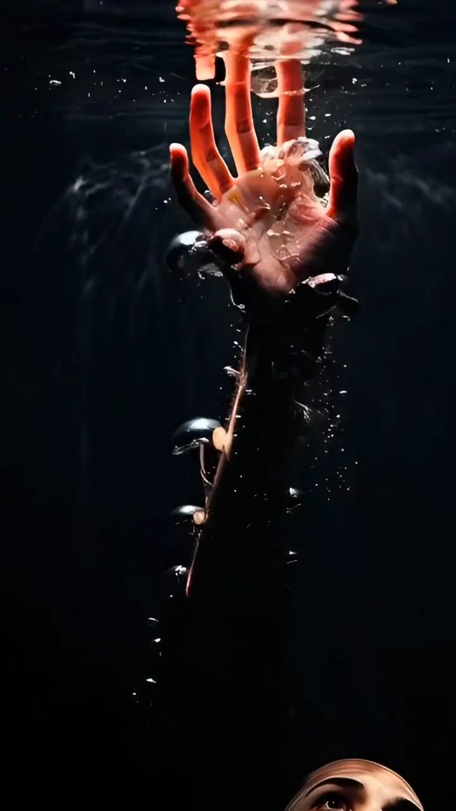

Эффект бабочки
Есть тонкое представление: бабочка, едва коснувшись воздуха крылом на одном конце земли, может вызвать цунами на другом. В мире ментальной магии это не резкая метафора, а спокойный принцип работы.
Мы все бережно связаны единым энергетическим полем. Расстояние не мешает этому тихому контакту. Ода может работать в одной точке мира — а тебе станет заметно легче в другой.
Ментальная магия опирается на мягкое убеждение, что сознание, намерение и энергия способны деликатно влиять на реальность. Через общее поле можно передавать исцеление, ослаблять энергетические блокировки, возвращать гармонию — без физического присутствия, без границ, без лишнего напряжения.
Это не сказочное волшебство, а тихая, глубокая работа с тем, что объединяет нас всех — с энергией, намерением и общим полем.
